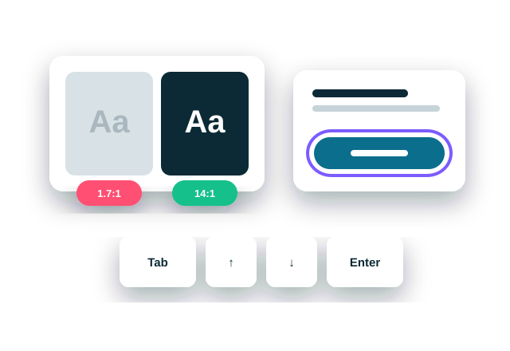

For any team with a website or app
A focused expert check of your three most important journeys against the ten problems that block users most often. You get a short list of what to fix first, not a 200-page compliance report.

In WebAIM's 2026 survey of the top one million home pages, 95.9% had detectable accessibility failures. Six error types made up 96% of everything found.
Source: The WebAIM Million, 2026 report
These are what automated scanners can detect. Some of the most serious blockers, like keyboard traps, only show up when a person tests by hand.
In Singapore, only government digital services must meet WCAG 2.1 AA. For most startups and SMEs, the strongest reason to check isn't compliance. It's your customers.
The reason for every business
Accessibility problems are usability problems with a sharper edge. The fixes that help people with disabilities also help everyone using your product in real life: reading in bright sunlight, tapping one-handed on a crowded MRT, squinting with tired eyes at night, or helping an older parent through sign-up.
Clearer text, bigger buttons and forms that explain their errors mean fewer drop-offs, fewer support calls and more people finishing what they came to do. And it's a growing market: more than one in five Singapore citizens is already 65 or older, rising to more than one in four by 2035.
It identifies the critical barriers in your key journeys. It isn't a full WCAG conformance audit or a certification, it doesn't include fixing the code, and it won't make your product “fully accessible” on its own. If you need formal conformance evidence for a government or EU contract, mention it on our call.
And it's expected when
Agencies must meet the Digital Service Standards, and the vendors building their services inherit the requirement.
The European Accessibility Act has applied since 28 June 2025 to services such as e-commerce and banking. Very small businesses are exempt.
Large customers increasingly ask suppliers for accessibility evidence during procurement.
Run across up to three critical journeys, or about eight screens, on one platform. Checked against WCAG 2.2, which includes everything in 2.1.
At least 4.5:1, or 3:1 for large text.
Meaningful images are described; decorative ones are hidden from screen readers.
Every field is labelled and every error is explained.
No empty or vague “click here” controls.
Every action works without a mouse, with no keyboard traps.
Users can always see where they are, and focus is never hidden behind sticky headers.
Usable at 200% zoom and at 320px width.
At least 24 × 24px, the WCAG 2.2 minimum.
Page language set, page titles present, headings in a logical order.
One full run of each journey with VoiceOver or NVDA.
Kept deliberately short, so your developers can act on it the same week.
A one-page pass or fail on the ten checks, then a single table of Critical and High issues: where, who is affected, the WCAG reference and the fix. Lower-severity issues are counted, not detailed.
The five to eight fixes that clear the most issues. Many are site-wide, like one colour change or a reusable button pattern.
A 45-minute session with your development team to go through the fixes.
| Option | Effort | Standard | First three clients |
|---|---|---|---|
| Accessibility Blockers Check | About 10 hours over one week | S$1,250 | S$1,100 |
| Added to a UX Audit, same journeys | About 6 hours | S$750 | S$650 |
Already included in UX Audit: Complete.